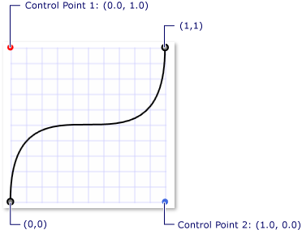
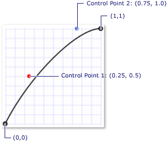

Общие сведения об анимации по ключевым кадрам
В этом разделе рассказывается об анимации по ключевым кадрам. Методика анимации по ключевым кадрам позволяет использовать более двух целевых значений и контролировать применяемый метод интерполяции.
Предварительные требования
Для понимания предлагаемого материала необходимо знакомство с принципами анимации Windows Presentation Foundation (WPF) и понятием временной шкалы. Общие сведения об анимации см. в разделе Общие сведения об анимации. Также полезно иметь знания по анимации From/To/By. Дополнительные сведения см. в разделе "Общие сведения об анимации From/To/By".
Что такое анимации по ключевым кадрам?
Так же как при анимации From/To/By при анимации по ключевым кадрам выполняется анимация значения целевого свойства. Она создает переход между заданными значениями над его Duration. Но в отличие от анимации From/To/By, при которой создается переход между двумя значениями, при анимации по ключевым кадрам можно создавать переходы между любым числом целевых значений за один раз. В анимации по ключевым кадрам не используются свойства From, To и By для задания целевых значений. Целевые значения для анимации по ключевым кадрам описываются с помощью объектов ключевых кадров (отсюда термин — "анимация по ключевым кадрам"). Для указания целевых значений анимации, создайте объекты ключевых кадров и добавить их в анимации KeyFrames коллекции. При выполнении анимации создаются переходы между заданными кадрами.
Кроме того, что при анимации по ключевым кадрам поддерживается обработка нескольких целевых значений, некоторые методы анимации по ключевым кадрам поддерживают использование нескольких методов интерполяции. Метод интерполяции анимации определяет, как выполняется переход от одного значения к другому. Существует три типа интерполяции: дискретная, линейная и интерполяция сплайнами.
Чтобы выполнить анимацию по ключевым кадрам, сделайте следующее.
Объявите анимацию и указать его Duration, так же, как и для анимации from/to/by.
Для каждого целевого значения создайте ключевой кадр соответствующего типа, задайте для него значение и KeyTimeи его добавления анимации KeyFrames коллекции.
Свяжите анимацию со свойством так же как при анимации From/To/By. Дополнительные сведения о применении анимации к свойству с помощью раскадровки см. в разделе Общие сведения о раскадровке.
В следующем примере используется DoubleAnimationUsingKeyFrames для анимации Rectangle элемент в четырех разных местах.
<Page xmlns="http://schemas.microsoft.com/winfx/2006/xaml/presentation"
xmlns:x="http://schemas.microsoft.com/winfx/2006/xaml"
x:Class="Microsoft.Samples.KeyFrameAnimations.KeyFramesIntroduction"
WindowTitle="KeyFrame Animations">
<Border Width="400" BorderBrush="Black">
<Rectangle Fill="Blue"
Width="50" Height="50"
HorizontalAlignment="Left">
<Rectangle.RenderTransform>
<TranslateTransform
x:Name="MyAnimatedTranslateTransform"
X="0" Y="0" />
</Rectangle.RenderTransform>
<Rectangle.Triggers>
<EventTrigger RoutedEvent="Rectangle.MouseLeftButtonDown">
<BeginStoryboard>
<Storyboard>
<!-- Animate the TranslateTransform's X property
from 0 to 350, then 50,
then 200 over 10 seconds. -->
<DoubleAnimationUsingKeyFrames
Storyboard.TargetName="MyAnimatedTranslateTransform"
Storyboard.TargetProperty="X"
Duration="0:0:10">
<LinearDoubleKeyFrame Value="0" KeyTime="0:0:0" />
<LinearDoubleKeyFrame Value="350" KeyTime="0:0:2" />
<LinearDoubleKeyFrame Value="50" KeyTime="0:0:7" />
<LinearDoubleKeyFrame Value="200" KeyTime="0:0:8" />
</DoubleAnimationUsingKeyFrames>
</Storyboard>
</BeginStoryboard>
</EventTrigger>
</Rectangle.Triggers>
</Rectangle>
</Border>
</Page>
From/To/By, такие как анимации, анимации по полным кадрам может применяться к свойству с помощью Storyboard в разметке и коде или с помощью BeginAnimation метод в коде. Анимации по полным кадрам может также использовать для создания AnimationClock и применить его к одному или нескольким свойствам. Дополнительные сведения о различных способах применения анимации см. в разделе Общие сведения о методах анимации свойств.
Типы анимации по ключевым кадрам
Так как при анимации создаются значения свойств, существуют различные типы анимаций для различных типов свойств. Для анимации свойства, которое принимает Double (например, элемента Width свойство), используйте анимацию, создающую Double значения. Для анимации свойства, которое принимает Point, используйте анимацию, создающую Point значений и т. д.
Классы анимации по ключевым кадрам принадлежат к System.Windows.Media.Animation пространства имен и соответствовать следующее соглашение об именовании:
<Тип > AnimationUsingKeyFrames
Где <Type> — тип значения, которое выполняет анимацию класса.
WPF предоставляет следующие классы анимации по ключевым кадрам.
Целевые значения (ключевые кадры) и временная шкала
Для анимации различных типов свойств существуют различные типы анимации по ключевым кадрам и, соответственно, различные типы объектов ключевых кадров — по одному для каждого типа анимированного значения и поддерживаемого метода интерполяции. Типы ключевых кадров удовлетворяют требованиям следующего соглашения об именах.
<InterpolationMethod ><тип > KeyFrame
Где <InterpolationMethod> — метод интерполяции, используемый при анимации по ключевым кадрам, а <Type> — тип значения, анимируемый классом. Метод анимации по ключевым кадрам, поддерживающий все три метода интерполяции, будет включать в себя три типа ключевых кадров, которые можно использовать. Например, можно использовать три типа ключевых кадров с DoubleAnimationUsingKeyFrames: DiscreteDoubleKeyFrame, LinearDoubleKeyFrame, и SplineDoubleKeyFrame. (Методы интерполяции подробно описаны в следующем разделе.)
Основная цель ключевого кадра является указание KeyTime и Value. Все типы ключевых кадров предоставляют эти два свойства.
Value Свойство определяет целевое значение для этого ключевого кадра.
KeyTime Указывает время (в пределах анимации Duration) достигается значение ключевого кадра Value достижения.
Когда начинается анимацию по ключевым кадрам, проходит по кадрам в порядке, определяемом их KeyTime свойства.
Если в момент 0 нет ключевого кадра, анимация создает переход между текущее значение целевого свойства и Value первого ключевого кадра; в противном случае анимация выходных данных значение становится значением первого ключевого кадра.
Анимация создает переход между Value первого и второго ключевого кадра с помощью метода интерполяции, определяемого второго ключевого кадра. Переход начинается с первого ключевого кадра KeyTime и заканчивается при второй ключевой кадр KeyTime достижения.
Анимация продолжается, создавая переходы от каждого предыдущего ключевого кадра к последующему.
Наконец, анимация переходит к значению ключевого кадра с наиболее поздним моментом времени, равным или меньшим, чем анимации Duration.
Если продолжительность анимации Duration — Automatic или его Duration равно времени последнего ключевого кадра, анимация завершается. В противном случае, если продолжительность анимации Duration больше, чем время последнего ключевого кадра, анимация удерживает значение ключевого кадра, пока не достигнет конца своего Duration. Как и анимациях при анимации по ключевым кадрам использует его FillBehavior свойства, чтобы определить, является ли он сохраняется ее конечное значение при достижении конца активного периода. Дополнительные сведения см. в разделе Общие сведения о характере поведения во времени.
В следующем примере используется DoubleAnimationUsingKeyFrames объект, определенный в предыдущем примере для демонстрации как Value и KeyTime работают свойства.
Первый кадр немедленно устанавливает выходное значение анимации равное 0.
Второй ключевой кадр выполняет анимацию от 0 до 350. Она запускается после окончания первого ключевого кадра (в момент времени 0 секунд), выполняется в течение 2 секунд и заканчивается в момент времени = 0:0:2.
Третий ключевой кадр выполняет анимацию от 350 до 50. Она запускается после окончания второго ключевого кадра (в момент времени 2 секунды), выполняется в течение 5 секунд и заканчивается в момент времени = 0:0:7.
Четвертый ключевой кадр выполняет анимацию от 50 до 200. Она запускается после окончания третьего ключевого кадра (в момент времени 7 секунд), выполняется в течение 1 секунды и заканчивается в момент времени = 0:0:8.
Так как Duration анимации было установлено на 10 секунд, анимация поддерживает конечное значение для двух секунд до окончания во время = 0:0:10.
<Page xmlns="http://schemas.microsoft.com/winfx/2006/xaml/presentation"
xmlns:x="http://schemas.microsoft.com/winfx/2006/xaml"
x:Class="Microsoft.Samples.KeyFrameAnimations.KeyFramesIntroduction"
WindowTitle="KeyFrame Animations">
<Border Width="400" BorderBrush="Black">
<Rectangle Fill="Blue"
Width="50" Height="50"
HorizontalAlignment="Left">
<Rectangle.RenderTransform>
<TranslateTransform
x:Name="MyAnimatedTranslateTransform"
X="0" Y="0" />
</Rectangle.RenderTransform>
<Rectangle.Triggers>
<EventTrigger RoutedEvent="Rectangle.MouseLeftButtonDown">
<BeginStoryboard>
<Storyboard>
<!-- Animate the TranslateTransform's X property
from 0 to 350, then 50,
then 200 over 10 seconds. -->
<DoubleAnimationUsingKeyFrames
Storyboard.TargetName="MyAnimatedTranslateTransform"
Storyboard.TargetProperty="X"
Duration="0:0:10">
<LinearDoubleKeyFrame Value="0" KeyTime="0:0:0" />
<LinearDoubleKeyFrame Value="350" KeyTime="0:0:2" />
<LinearDoubleKeyFrame Value="50" KeyTime="0:0:7" />
<LinearDoubleKeyFrame Value="200" KeyTime="0:0:8" />
</DoubleAnimationUsingKeyFrames>
</Storyboard>
</BeginStoryboard>
</EventTrigger>
</Rectangle.Triggers>
</Rectangle>
</Border>
</Page>
Методы интерполяции
В предыдущих разделах упоминалось, что некоторые методы анимации по ключевым кадрам поддерживают несколько методов интерполяции. Метод интерполяции определяет, как должен выполняться переход от одного значения к другому во время анимации. Выбрав тип ключевого кадра, используемого при анимации, можно определить метод интерполяции для этого сегмента ключевого кадра. Существуют три метода интерполяции: линейная интерполяция, дискретная и интерполяция сплайнами.
Линейная интерполяция
При линейной интерполяции переход выполняется с постоянной скоростью на протяжении сегмента. Например, если в сегменте ключевого кадра происходит переход от 0 до 10 в течение 5 секунд, выходные данные анимации будут принимать следующие значения в указанные моменты времени.
| Время | Выходное значение |
|---|---|
| 0 | 0 |
| 1 | 2 |
| 2 | 4 |
| 3 | 6 |
| 4 | 8 |
| 4.25 | 8.5 |
| 4.5 | 9 |
| 5 | 10 |
Дискретная интерполяция
При дискретной интерполяции функция анимации выполняет переходы от одного значения к другому без интерполяции. Если в сегменте ключевого кадра происходит переход от 0 до 10 в течение 5 секунд, выходные данные анимации будут принимать следующие значения в указанные моменты времени.
| Время | Выходное значение |
|---|---|
| 0 | 0 |
| 1 | 0 |
| 2 | 0 |
| 3 | 0 |
| 4 | 0 |
| 4.25 | 0 |
| 4.5 | 0 |
| 5 | 10 |
Обратите внимание на то, что выходное значение не изменяется до окончания длительности сегмента.
Интерполяция сплайнами более сложная. Она описана в следующем разделе.
Интерполяция сплайнами
Интерполяция сплайнами может использоваться для достижения более реалистичных временных эффектов. Так как анимация часто используется для имитации эффектов, возникающих в реальном мире, разработчикам могут потребоваться полный контроль над ускорением и замедлением объектов и точная манипуляция временными сегментами. Ключевые кадры-сплайны позволяют выполнять анимацию с интерполяцией сплайнами. С другими ключевыми кадрами задаются Value и KeyTime. С помощью опорных кадров сплайна, также следует указать KeySpline. В следующем примере показан один сплайновый опорный кадр для DoubleAnimationUsingKeyFrames. Обратите внимание, что KeySpline свойство; что отличает ключевой кадр-сплайн от других типов ключевых кадров.
<SplineDoubleKeyFrame Value="500" KeyTime="0:0:7" KeySpline="0.0,1.0 1.0,0.0" />
Кривая Безье третьего порядка определяется начальной точкой, конечной точкой и двумя контрольными точками. KeySpline Свойство ключевого кадра-сплайна определяет две контрольные точки кривой Безье, которая расширяет от (0,0) и (1,1). Первая контрольная точка управляет коэффициентом кривизны первой половины кривой Безье, а вторая контрольная точка — коэффициентом кривизны второй половины сегмента. Полученная кривая описывает скорость изменения для этого ключевого кадра-сплайна. Чем круче кривая, тем быстрее ключевой кадр изменяет свои значения. Когда кривая становится более пологой, ключевой кадр медленнее изменяет свои значения.
Можно использовать KeySpline для имитации физических траекторий, таких как падающая вода или прыгающий шарик, или применить другие «замедлить в» и «замедлить» эффекты анимации. Для реализации эффектов взаимодействия с пользователем, таких как затухание фона или отпускание кнопки элемента управления, можно применять интерполяцию сплайнами, чтобы ускорить или замедлить скорость изменения при анимации конкретных движений.
В следующем примере задается KeySpline 0,1 1,0, которое создает следующую кривую Безье.

Ключевой сплайн с контрольными точками (0,0, 1,0) и (1,0, 0,0)
<SplineDoubleKeyFrame Value="500" KeyTime="0:0:7" KeySpline="0.0,1.0 1.0,0.0" />
Этот ключевой кадр вначале выполняет быстрое движение, затем замедляется и снова ускоряется перед завершением.
В следующем примере задается KeySpline из 0.75,1.0 0.5,0.25, который создает следующую кривую Безье.

Ключевой сплайн с контрольными точками (0,25, 0,5) и (0,75, 1,0)
<SplineDoubleKeyFrame Value="350" KeyTime="0:0:15" KeySpline="0.25,0.5 0.75,1" />
Так как кривизна кривой Безье изменяется незначительно, этот ключевой кадр выполняет движение почти с постоянной скоростью, несколько замедляясь перед завершением.
В следующем примере используется DoubleAnimationUsingKeyFrames для анимации положения прямоугольника. Так как DoubleAnimationUsingKeyFrames использует SplineDoubleKeyFrame объектов, переход от одного значения ключевого кадра использует интерполяцию сплайнами.
<!-- This rectangle is animated using a key frame animation
with splined interpolation. -->
<Rectangle
Width="50"
Height="50"
Fill="Purple">
<Rectangle.RenderTransform>
<TranslateTransform
x:Name="SplineAnimatedTranslateTransform"
X="0" Y="0" />
</Rectangle.RenderTransform>
<Rectangle.Triggers>
<EventTrigger RoutedEvent="Rectangle.Loaded">
<BeginStoryboard>
<Storyboard>
<!-- Animate the TranslateTransform's X property
from its base value (0) to 500, then 200,
then 350 over 15 seconds. -->
<DoubleAnimationUsingKeyFrames
Storyboard.TargetName="SplineAnimatedTranslateTransform"
Storyboard.TargetProperty="X"
Duration="0:0:15"
RepeatBehavior="Forever">
<SplineDoubleKeyFrame Value="500" KeyTime="0:0:7" KeySpline="0.0,1.0 1.0,0.0" />
<SplineDoubleKeyFrame Value="200" KeyTime="0:0:10" KeySpline="0.0,0.0 1.0,0.0" />
<SplineDoubleKeyFrame Value="350" KeyTime="0:0:15" KeySpline="0.25,0.5 0.75,1" />
</DoubleAnimationUsingKeyFrames>
</Storyboard>
</BeginStoryboard>
</EventTrigger>
</Rectangle.Triggers>
</Rectangle>
Интерполяцию сплайнами не так просто понять. Попробуйте поэкспериментировать с различными параметрами. Пример анимации по ключевым сплайнам позволяет, изменяя значения ключевого сплайна, просмотреть результат на анимации.
Комбинирование методов интерполяции
Можно использовать ключевые кадры с различными типами интерполяции в одной операции анимации. Если два ключевых кадра анимации с различными методами интерполяции следуют друг за другом, то для создания перехода от первого значения ко второму используется метод интерполяции второго ключевого кадра.
В следующем примере DoubleAnimationUsingKeyFrames создается, используется линейная, сплайнами и дискретную интерполяцию.
<!-- This rectangle is animated using a key frame animation
with a combination of interpolation methods. -->
<Rectangle
Width="50"
Height="50"
Fill="Orange">
<Rectangle.RenderTransform>
<TranslateTransform
x:Name="ComboAnimatedTranslateTransform"
X="0" Y="0" />
</Rectangle.RenderTransform>
<Rectangle.Triggers>
<EventTrigger RoutedEvent="Rectangle.Loaded">
<BeginStoryboard>
<Storyboard>
<!-- Animate the TranslateTransform's X property
from its base value (0) to 500, then 200,
then 350 over 15 seconds. -->
<DoubleAnimationUsingKeyFrames
Storyboard.TargetName="ComboAnimatedTranslateTransform"
Storyboard.TargetProperty="X"
Duration="0:0:15"
RepeatBehavior="Forever">
<DiscreteDoubleKeyFrame Value="500" KeyTime="0:0:7" />
<LinearDoubleKeyFrame Value="200" KeyTime="0:0:10" />
<SplineDoubleKeyFrame Value="350" KeyTime="0:0:15"
KeySpline="0.25,0.5 0.75,1" />
</DoubleAnimationUsingKeyFrames>
</Storyboard>
</BeginStoryboard>
</EventTrigger>
</Rectangle.Triggers>
</Rectangle>
Дополнительные сведения о длительности и временной шкале
Как и другие виды анимации, имеют покадровой анимации Duration свойство. Помимо задания длительности анимации Duration, необходимо указать, какая часть длительности предоставляется для каждого ключевого кадра. Это можно сделать с описанием KeyTime для каждого из ключевых кадров анимации. Шкала каждого ключевого кадра KeyTime указывает, когда заканчивается этот ключевой кадр.
KeyTime Свойство не указывает продолжительность воспроизведения ключевого времени. Продолжительность выполнения ключевого кадра определяется моментом окончания ключевого кадра, моментом окончания предыдущего ключевого кадра и длительностью анимации. Время может быть указан как значение времени, в процентах, или как специальные значения Uniform или Paced.
Ниже описаны различные способы определения времени ключевого кадра.
Значения временного диапазона
Вы можете использовать TimeSpan значения следует задать KeyTime. Значение должно быть больше или равно 0 и меньше или равно длительности анимации. В следующем примере показана анимация длительностью 10 секунд с четырьмя ключевыми кадрами, время которых указывается в виде значений времени.
Первый ключевой кадр выполняет анимацию от базового значения до 100 в течение первых 3 секунд и заканчивает в момент времени = 0:0:03.
Второй ключевой кадр выполняет анимацию от 100 до 200. Она запускается после окончания первого ключевого кадра (в момент времени 3 секунды), выполняется в течение 5 секунд и заканчивается в момент времени = 0:0:8.
Третий ключевой кадр выполняет анимацию от 200 до 500. Она запускается после окончания второго ключевого кадра (в момент времени 8 секунд), выполняется в течение 1 секунды и заканчивается в момент времени = 0:0:9.
Четвертый ключевой кадр выполняет анимацию от 500 до 600. Она запускается после окончания третьего ключевого кадра (в момент времени 9 секунд), выполняется в течение 1 секунды и заканчивается в момент времени = 0:0:10.
<!-- This rectangle is animated with KeyTimes using TimeSpan values.
Goes to 100 in the first 3 seconds, 100 to 200 in
the next 5 seconds, 300 to 500 in the next second,
and 500 to 600 in the final second. -->
<Rectangle Width="50" Height="50" Fill="Blue">
<Rectangle.RenderTransform>
<TranslateTransform x:Name="TranslateTransform01" X="10" Y="30" />
</Rectangle.RenderTransform>
<Rectangle.Triggers>
<EventTrigger RoutedEvent="Rectangle.Loaded">
<BeginStoryboard>
<Storyboard>
<DoubleAnimationUsingKeyFrames
Storyboard.TargetName="TranslateTransform01"
Storyboard.TargetProperty="X"
Duration="0:0:10"
RepeatBehavior="Forever">
<!-- KeyTime properties are expressed as TimeSpan values
which are in the form of "hours:minutes:seconds". -->
<LinearDoubleKeyFrame Value="100" KeyTime="0:0:3" />
<LinearDoubleKeyFrame Value="200" KeyTime="0:0:8" />
<LinearDoubleKeyFrame Value="500" KeyTime="0:0:9" />
<LinearDoubleKeyFrame Value="600" KeyTime="0:0:10" />
</DoubleAnimationUsingKeyFrames>
</Storyboard>
</BeginStoryboard>
</EventTrigger>
</Rectangle.Triggers>
</Rectangle>
Значения в процентах
Процентное значение указывает, что окончания опорного кадра в определенный процент анимации Duration. В XAML значение в процентах указывается как число, за которым следует символ %. В коде используйте FromPercent метод и передать его Double в процентах. Значение должно быть больше или равно 0 и меньше или равно 100 %. В следующем примере показана анимация длительностью 10 секунд с четырьмя ключевыми кадрами, время которых указывается в виде значений в процентах.
Первый ключевой кадр выполняет анимацию от базового значения до 100 в течение первых 3 секунд и заканчивает в момент времени = 0:0:3.
Второй ключевой кадр выполняет анимацию от 100 до 200. Она запускается после окончания первого ключевого кадра (в момент времени 3 секунды), выполняется в течение 5 секунд и заканчивается в момент времени = 0:0:8 (0,8 * 10 = 8).
Третий ключевой кадр выполняет анимацию от 200 до 500. Она запускается после окончания второго ключевого кадра (в момент времени 8 секунд), выполняется в течение 1 секунды и заканчивается в момент времени = 0:0:9 (0,9 * 10 = 9).
Четвертый ключевой кадр выполняет анимацию от 500 до 600. Она запускается после окончания третьего ключевого кадра (в момент времени 9 секунд), выполняется в течение 1 секунды и заканчивается в момент времени = 0:0:10 (1 * 10 = 10).
<!-- Identical animation behavior to the previous rectangle
but using percentage values for KeyTimes rather then TimeSpan. -->
<Rectangle Height="50" Width="50" Fill="Purple">
<Rectangle.RenderTransform>
<TranslateTransform x:Name="TranslateTransform02" X="10" Y="110" />
</Rectangle.RenderTransform>
<Rectangle.Triggers>
<EventTrigger RoutedEvent="Rectangle.Loaded">
<BeginStoryboard>
<Storyboard>
<DoubleAnimationUsingKeyFrames
Storyboard.TargetName="TranslateTransform02"
Storyboard.TargetProperty="X"
Duration="0:0:10"
RepeatBehavior="Forever">
<!-- KeyTime properties are expressed as Percentages. -->
<LinearDoubleKeyFrame Value="100" KeyTime="30%" />
<LinearDoubleKeyFrame Value="200" KeyTime="80%" />
<LinearDoubleKeyFrame Value="500" KeyTime="90%" />
<LinearDoubleKeyFrame Value="600" KeyTime="100%" />
</DoubleAnimationUsingKeyFrames>
</Storyboard>
</BeginStoryboard>
</EventTrigger>
</Rectangle.Triggers>
</Rectangle>
Специальное значение, равномерный метод
Используйте Uniform о времени, когда требуется, чтобы каждый опорный кадр продолжался одинаковое время.
Объект Uniform делит доступное время одинаково на число ключевых кадров для определения времени окончания каждого кадра. Ниже примере показана анимация длительностью 10 секунд и четырьмя ключевыми кадрами, время задаются в виде Uniform.
Первый ключевой кадр выполняет анимацию от базового значения до 100 в течение первых 2,5 секунды и заканчивает в момент времени = 0:0:2,5.
Второй ключевой кадр выполняет анимацию от 100 до 200. Она запускается после окончания первого ключевого кадра (в момент времени 2,5 секунды), выполняется в течение примерно 2,5 секунды и заканчивается в момент времени = 0:0:5.
Третий ключевой кадр выполняет анимацию от 200 до 500. Она запускается после окончания второго ключевого кадра (в момент времени 5 секунд), выполняется в течение 2,5 секунды и заканчивается в момент времени = 0:0:7,5.
Четвертый ключевой кадр выполняет анимацию от 500 до 600. Она запускается после окончания второго ключевого кадра (в момент времени 7,5 секунды), выполняется в течение 2,5 секунд и заканчивается в момент времени = 0:0:1.
<!-- This rectangle is animated with KeyTimes using Uniform values. -->
<Rectangle Height="50" Width="50" Fill="Red">
<Rectangle.RenderTransform>
<TranslateTransform x:Name="TranslateTransform03" X="10" Y="190" />
</Rectangle.RenderTransform>
<Rectangle.Triggers>
<EventTrigger RoutedEvent="Rectangle.Loaded">
<BeginStoryboard>
<Storyboard>
<DoubleAnimationUsingKeyFrames
Storyboard.TargetName="TranslateTransform03"
Storyboard.TargetProperty="X"
Duration="0:0:10"
RepeatBehavior="Forever">
<!-- KeyTime properties are expressed with values of Uniform.
When a key time is set to "Uniform" the total allotted
time of the animation is divided evenly between key frames.
In this example, the total duration of the animation is
ten seconds and there are four key frames each of which
are set to "Uniform", therefore, the duration of each key frame
is 3.3 seconds (10/3). -->
<LinearDoubleKeyFrame Value="100" KeyTime="Uniform" />
<LinearDoubleKeyFrame Value="200" KeyTime="Uniform" />
<LinearDoubleKeyFrame Value="500" KeyTime="Uniform" />
<LinearDoubleKeyFrame Value="600" KeyTime="Uniform" />
</DoubleAnimationUsingKeyFrames>
</Storyboard>
</BeginStoryboard>
</EventTrigger>
</Rectangle.Triggers>
</Rectangle>
Определенное значение, пошаговый метод
Используйте Paced о времени, когда требуется анимировать с постоянной скоростью.
Объект Paced ключевое время выделяет доступное время в соответствии с длиной каждого ключевого кадра для определения длительности каждого кадра. Это приводит к тому, что скорость или темп анимации остается постоянной. Ниже примере показана анимация длительностью 10 секунд и три ключевых кадра, время задаются в виде Paced.
<!-- Using Paced Values. Rectangle moves between key frames at
uniform rate except for first key frame
because using a Paced value on the first KeyFrame in a
collection of frames gives a time of zero. -->
<Rectangle Height="50" Width="50" Fill="Orange">
<Rectangle.RenderTransform>
<TranslateTransform x:Name="TranslateTransform04" X="10" Y="270" />
</Rectangle.RenderTransform>
<Rectangle.Triggers>
<EventTrigger RoutedEvent="Rectangle.Loaded">
<BeginStoryboard>
<Storyboard>
<DoubleAnimationUsingKeyFrames
Storyboard.TargetName="TranslateTransform04"
Storyboard.TargetProperty="X"
Duration="0:0:10"
RepeatBehavior="Forever">
<!-- KeyTime properties are expressed with values of Paced.
Paced values are used when a constant rate is desired.
The time allocated to a key frame with a KeyTime of "Paced"
is determined by the time allocated to the other key
frames of the animation. This time is calculated to
attempt to give a "paced" or "constant velocity"
for the animation. -->
<LinearDoubleKeyFrame Value="100" KeyTime="Paced" />
<LinearDoubleKeyFrame Value="200" KeyTime="Paced" />
<LinearDoubleKeyFrame Value="500" KeyTime="Paced" />
<LinearDoubleKeyFrame Value="600" KeyTime="Paced" />
</DoubleAnimationUsingKeyFrames>
</Storyboard>
</BeginStoryboard>
</EventTrigger>
</Rectangle.Triggers>
</Rectangle>
Обратите внимание, что, если время последнего ключевого кадра является Paced или Uniform, его расчетное время будет задано до 100 процентов. Если первый ключевой кадр в многокадровой анимации является пошаговым, его расчетное время будет задано в размере 0. (Если коллекция ключевых кадров содержит только один кадр и этот кадр пошаговый, его расчетное время будет задано в размере 100 %.)
Разные ключевые кадры в однокадровой анимации могут использовать разные типы времени кадра.
Объединение времени ключевых кадров, неупорядоченные ключевые кадры
Можно использовать ключевые кадры с разными KeyTime типы значений в одной анимации. И хотя рекомендуется добавлять ключевые кадры в том порядке, в каком они должны выполняться, в этом нет необходимости. Система выполнения анимации и расчета времени способна обрабатывать неупорядоченные ключевые кадры. Ключевые кадры с недопустимым временем игнорируются.
Ниже приводятся процедуры, с помощью которых рассчитывается время кадра при анимации по ключевым кадрам.
Определение общего времени интерполяции анимации (общего времени, необходимого для выполнения прямой итерации при анимации по ключевым кадрам).
Если продолжительность анимации Duration не Automatic или Forever, общее время интерполяции является значением анимации Duration свойство.
В противном случае — самое большое общее время интерполяции TimeSpan KeyTime значение, указанное кадрам, если таковые существуют.
В остальных случаях общее время интерполяции равно 1 секунде.
Использовать значения времени интерполяции для разрешения Percent KeyTime значения.
Расчет времени последнего кадра в случае, если оно не было рассчитано на предыдущих шагах. Если KeyTime последнего ключевого кадра является Uniform или Paced, его расчетное время будет равно общему времени интерполяции.
Если KeyTime первого ключевого кадра является Paced и эта анимация имеет более одного ключевого кадра, устраните ее KeyTime значение равно нулю, в том случае, если имеется только один ключевой кадр и его KeyTime значение Paced, он разрешен в общей сумме время интерполяции, как описано в предыдущем шаге.
Определите оставшиеся Uniform KeyTime значения: каждое из них получает равную долю доступного времени. В ходе этого процесса неразрешенных Paced KeyTime значения считаются временно Uniform KeyTime значения и получают временно определенное время.
Разрешить KeyTime значения ключевых кадров с неуказанным временем кадра с использованием соседних объявленных ключевых кадров, которые были устранены KeyTime значения.
Определите оставшиеся Paced KeyTime значения. Paced KeyTime использовать KeyTime значений соседних ключевые кадры для определения их расчетного времени. Цель — убедиться, что скорость анимации является постоянной в течение расчетного времени этого ключевого кадра.
Сортировка ключевых кадров в порядке расчетного времени (первичный ключ) и в порядке объявления (вторичный ключ), т. е., использование строгой сортировки в зависимости от полных кадров KeyTime значения.